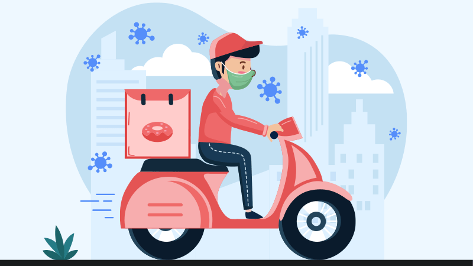
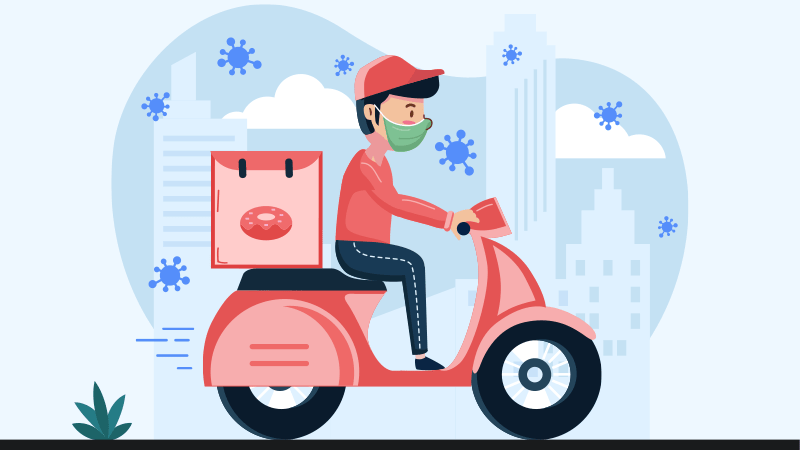
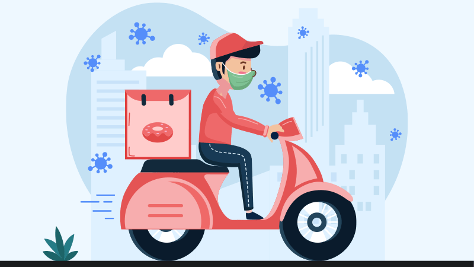

Martina Abdelmalak
Hello, my name is Martina Abdelmalak. Welcome to my page! To start off I was born in Alexandria, Egypt. I moved to California when I was four and currently live in Corona, California. In 2020, I graduated from Santiago High School. Although it was a virtual graduation due to COVID-19, I still got that diploma! I am 19 years old and am a First Year College Student at UCR. One good thing I got out of this pandemic is that I was able to challenge myself and am now a year ahead and will hopefully graduate in Spring 2023. I am currently a Sociology major in hopes of becoming a Social Worker one day. I hope to get my masters in social work after I am done with my bachelors degree.
Growing up I had a huge challenge to face being a triplet. I am the only girl with two brothers. Growing up it was always a big goal to set myself apart from everyone. Being a triplet meant growing up as a unit. Over the course of the past few years, I learned to become an individual, seek my own interests, and discover my own passions. However, the process of finding out who I was apart from my two brothers took me a while. In High School I found my purpose apart from my brothers. I felt like I could express myself as an individual and not as a package. As we began taking different classes, the comparisons stopped. Although things at home revolved around being a competition, I learned that life is not always about winning, but instead, about learning and exploring the ways that work best for me. At times, realizing that no matter what I accomplished, family and friends would compare me to my siblings was a hard pill to swallow, but it taught me to work harder in order to prove myself. I realized that being myself is what made me unique.
Along with high school, a perfect spot for me to become my own individual, be a leader, and gain a lot of skills was from my past experience working as a waiter in Fazoli’s. Fazoli’s is a national chain of Italian food serving different types of pizzas, pastas, salads, and of course breadsticks. Working as a server at an Italian restaurant required a lot of skills and dedication. I would serve dinner to almost 100 customers per shift. I also had to memorize over 30 menu items and rotate specials in order to give customized recommendations to guests. This required me to do a lot of studying and work outside of my designated shift hours. Along with this, I also had to deal with successfully resolving conflicts in order to gain customer satisfaction. I would develop relationships with returning customers to gain customer loyalty. Finally, I had to maintain a positive atmosphere at all times. All these skills combined made me the best leader and team member that I could be. Not only did it make me succeed at my job, but set me up for a successful future.
Experience
Baby Sitter
• Assisted kids with homework as well as feed, bathed, and put them to bed
• Fostered a safe and positive environment
• Followed parents instructions
InstaCart Worker
• Picked customers exact groceries
• Delivered groceries to customers' house
• Picked and Delivered as fast as possible
• Followed all COVID-19 Precautions
Education
UC Riverside
Portfolio

 

